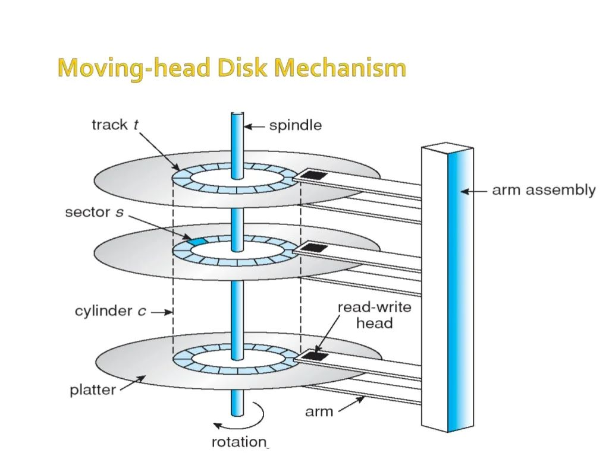

What are Disk Scheduling Algorithms?
A process needs two type of time, CPU time and IO time. For I/O, it requests the Operating system to access the disk.However, the operating system must be fare enough to satisfy each request and at the same time, operating system must maintain the efficiency and speed of process execution.The technique that operating system uses to determine the request which is to be satisfied next is called disk scheduling.Disk scheduling is done by operating systems to schedule I/O requests arriving for the disk. Disk scheduling is also known as I/O Scheduling.

Some important terminologies :
- Seek Time
-
Seek time is the time taken in locating the disk arm to a specified track where the read/write request will be satisfied.
- Rotational Latency
-
It is the time taken by the desired sector to rotate itself to the position from where it can access the R/W heads.
- Transfer Time
-
It is the time taken to transfer the data.
- Disk Access Time
-
Disk access time is given as,
Disk Access Time = Rotational Latency + Seek Time + Transfer Time
- Disk Response Time:
-
It is the average of time spent by each request waiting for the IO operation.
SSTF DISK SCHEDULING ALGORITHM
SSTF (Shortest Seek Time First) is a disk scheduling algorithm used in operating systems. It is designed to reduce the total seek time of the disk arm, which is the time taken to move the disk arm to the track containing the next requested sector. The algorithm selects the request that is closest to the current position of the disk arm and services it first.
SSTF is a variation of the FCFS (First-Come-First-Served) algorithm, which serves I/O requests in the order they arrive. FCFS can lead to longer seek times and reduced performance due to the waiting time of requests that are located far from the current position of the disk arm. SSTF reduces this waiting time by selecting the request that is closest to the current position of the disk arm, thereby minimizing seek time and maximizing performance.
The SSTF algorithm maintains a queue of requests waiting to be serviced, with the closest request being serviced first. When a request is completed, the algorithm selects the next request from the queue that is closest to the current position of the disk arm. This process continues until all the requests in the queue have been serviced.
ADVANTAGES OF SSTF DISK SCHEDULING ALGORITHM
- Shorter seek time: Since SSTF chooses the request that is closest to the current head position, it results in a shorter seek time. This leads to faster disk access and better system performance.
- Improves throughput: The SSTF algorithm has a better throughput than some other scheduling algorithms, such as the First-Come-First-Served (FCFS) algorithm. This is because it reduces the average waiting time of requests in the queue.
- Easy to implement: SSTF is a simple and easy-to-implement algorithm that does not require complex calculations or data structures. This makes it a popular choice for small-scale systems and embedded devices.
DISADVANTAGES OF SSTF DISK SCHEDULING ALGORITHM
- May lead to starvation: If the requests are constantly arriving at the disk, then the closest request will always be serviced first. This may result in some requests never being serviced, leading to starvation.
- Head movement may be unpredictable: While the SSTF algorithm tries to minimize seek time, it may result in unpredictable head movement. This may lead to some requests being delayed, and may reduce the overall efficiency of the disk.
- May not be optimal: While SSTF is a good algorithm for reducing seek time, it may not always be the optimal choice. There are other algorithms, such as the SCAN and C-SCAN algorithms, that may have better overall performance in certain situations./li>